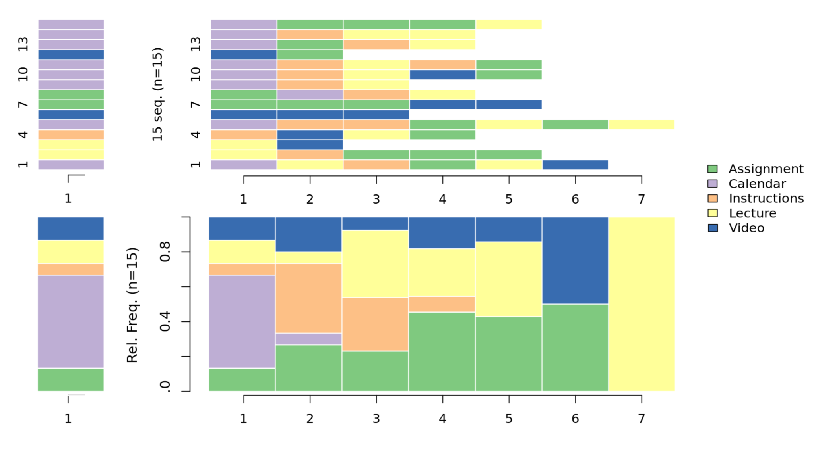
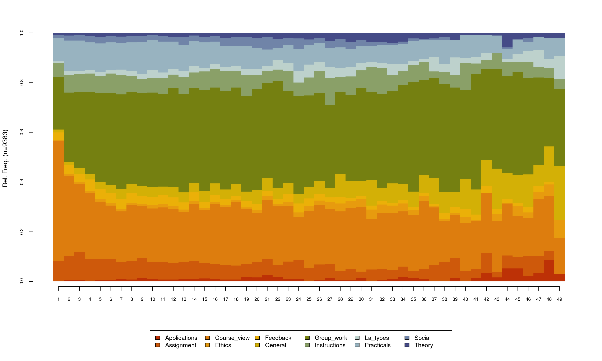

10 Sequence analysis: Basic principles, technique, and tutorial
1 Introduction
Patterns exist everywhere in our life, from the sequence of genes to the order of steps in cooking recipes. Discovering patterns, variations, regularities, or irregularities is at the heart of scientific inquiry and, therefore, several data mining methods have been developed to understand patterns. Sequence analysis —or sequence mining— was developed almost four decades ago to address the increasing needs for pattern mining [1]. Ever since, a wealth of applications, algorithms, and statistical tools have been developed, adapted, or incorporated into the array of sequence analysis. Since sequence mining has been conceptualized, it has grown in scale of adoption and range of applications across life and social sciences [5] and education research was no exception (e.g., [7]). As a data mining technique, sequence mining has been commonly implemented to identify hidden patterns that would otherwise be missed using other analytical techniques and find interesting subsequences (parts of the sequence) that have practical significance or unexpected sequences that we didn’t know existed [9]. For instance, by mining sequences of collaborative dialogue, we could identify which sequences are followed by more conductive to more argumentative interactions, and what sequences are crucial to the collaborative process. A literature review of the common applications follows in the next section.
Learning is a process that unfolds in time, a process that occurs in sequences of actions, in repeated steps, in patterns that have meanings and value for understanding learners’ behavior [10]. The conceptualization of learning as a process entails two important criteria: process as a sequence of states that unfold in time and process as a transformative mechanism that drives the change from one state to another [11]. Thereupon, methods such as sequence mining have gained increasing grounds and amassed a widening repertoire of techniques in the field of education to study the learning process. In particular, sequence mining has been used to harness the temporal unfolding of learners’ behavior using digital data, transcripts of conversations, or behavioral states [12]. Nevertheless, sequence mining can be used to study non-temporal sequences such as protein sequences and other types of categorical data [4].
What makes sequences in education interesting is that they have patterns of repeated or recurrent sequences. Finding such patterns has helped typify learners’ behaviors and identify which patterns are associated with learning and which are associated with unfavorable outcomes [7]. Sequence mining can also describe a pathway or a trajectory of events, for example, how a student proceeds from enrolment to graduation [14], and help to identify the students who have a stable trajectory, who are turbulent, and who are likely to falter along their education [7].
2 Review of the literature
In recent years, sequence analysis has become a central method in learning analytics research due to its potential to summarize and visually represent large amounts of student-related data. In this section we provide an overview of some of the most representative studies in the published literature. A summary of the studies reviewed in this section can be seen in Table 10.1. A common application of sequence analysis is the study of students’ log data extracted from their interactions with online learning technologies (mosty learning management systems, LMSs) throughout a learning session [15–17]. In some studies, the session is well-delimited, such as the duration of a game [18] or moving window [19], but in most cases it is inferred from the data, considering a session as an uninterrupted sequence of events [15, 16]. Few are the studies in which longer sequences are studied, covering a whole course or even a whole study program [7, 14, 20]. In such studies, the sequences are not composed of instantaneous interactions but rather of states that aggregate students’ information over a certain period, for example, we can study students’ engagement [14], learning strategies [7], or collaboration roles [20] for each course in a study program.
Most of the existing research has used clustering techniques to identify distinct groups of similar sequences. Agglomerative Hierarchical Clustering (AHC) has been the most recurrently used technique, with a wealth of distance measures such as Euclidean [7, 15], Longest Common Subsequence [18], Longest Common Prefix [21], and Optimal Matching [16]. Other works have relied on Markovian Models [13, 20] or differential sequence mining [6]. Throughout the remainder of the book, we provide an introduction to sequence analysis as a method, describing in detail the most relevant concepts for its application to educational data. We provide a step-by-step tutorial of how to implement sequence analysis in a data set of student log data using the R programming language.
| Ref. | Context | Time scheme | Actor | Alphabet | Clustering algorithm |
|---|---|---|---|---|---|
| [6] | 40 students | Learning activity (5 days) | Student | LMS events | Differential sequence mining (core algorithm) |
| [19] | 1 middle school class (40 students) | Learning activity (5 days) | Student | LMS events (e.g., Read, Linkadd) | Differential sequence mining (core algorithm, SPAMc) |
| [16] | 1 university course (290 students) | Session | Student-session | LMS events | AHC (Optimal matching) |
| Course | Student-course | Tactics obtained from previous clustering | AHC (Euclidean distance) | ||
| [15] | 3 courses: one university course with 3 course offerings (1135 students), another university course with 2 course offerings (487 students), and a MOOC with a single offering (368 students) | Session | Student-session | LMS events (e.g., content_access, download) | First Order Markov Model |
| Course | Student-course | Tactics obtained from previous clustering | AHC (Euclidean distance) | ||
| [14] | 15 university courses (106 students) | Study program (15 courses) | Student | Engagement state (e.g., Active, Average) | Hidden Markov Models |
| [18] | 1 educational escape room game in a university course (96 students) | Escape room game (1h 45m) | Team | Game activity (e.g., hint obtained, puzzle solving) | AHC (Longest Common Subsequence) |
| [20] | 10 university courses (329 students) | Study program (10 courses) | Student | Roles in the group (e.g., Leaders, Mediators) | Mixture Hidden Markov Models |
| [7] | 10 university courses (135 students) | Session | Student-session | LMS event (e.g., Course main view, Forum consume) | Mixture Hidden Markov Models |
| Course | Student-course | Tactics obtained from previous clustering (e.g., Lecture read, Forum read) | AHC (Euclidean distance) | ||
| Study program (10 courses) | Student | Course-level strategies from previous clustering (e.g., Light interactive, Moderate interactive) | AHC (Euclidean distance) | ||
| [21] | 1 university courses, 4 Course offerings (200 students) | Week | Group of students | Interaction type on forum (e.g., Discuss, Argue) | |
| Session | Student-session | Interaction type on forum (e.g., Discuss, Argue) | AHC (Longest Common Prefix) |
3 Basics of sequences
Sequences are ordered lists of discrete elements (i.e., events, states or categories). Such elements are discrete (in contrast to numerical values such as grades) and are commonly organized chronologically. Examples include sequence of activities, sequence of learning strategies, or sequence of behavioral states [23]. A sequence of learning activities may include (play video - solve exercise - taking quiz - access instructions) [13], other examples include sequence of game moves e.g., (solve puzzle - request hint - complete game) [18], or collaborative roles, for instance, (leader - mediator - isolate) [20].
Before going into sequence analysis, let’s discuss a basic example of a sequence inspired by [14]. Let’s assume we are tracking the engagement states of students from a course to the next and for a full year that has five courses. The engagement states can be either engaged (when the student is fully engaged in their learning), average (when the student is moderately engaged), and disengaged (when the student is barely engaged). Representing the sequence of engagement states of two hypothetical students may look like the example on Table 10.2.
| Actor | Course 1 | Course 2 | Course 3 | Course 4 | Course 5 |
|---|---|---|---|---|---|
| Student 1 | Average | Engaged | Engaged | Engaged | Engaged |
| Student 2 | Average | Disengaged | Disengaged | Disengaged | Disengaged |
The first student starts in course 1 with an Average engagement state, in Course 2, the student is engaged, and so in all the subsequent courses Course 3, Course 4, and Course 5. The student in row 2 has a Disengaged state in course 2 onwards. As we can see from the two sequences here, there is a pattern that repeats in both sequences (both students stay 4 consecutive courses in the same state). In real-life examples, sequences are typically longer and in larger numbers. For instance, the paper by [14] contains 106 students for a sequence of 15 courses. Finding repeated patterns of engaged states similar to the first student or repeated patterns of disengaged states like the other student would be interesting and helpful to understand how certain subgroups of students proceed in their education and how that relates to their performance.
3.1 Steps of sequence analysis
Several protocols exist for sequence analysis that vary by discipline, research questions, type of data, and software used. In education, sequence analysis protocol usually follows steps that include preparing the data, finding patterns, and relating these patterns to other variables e.g., performance e.g., [16]. The protocol which will be followed in this manual includes six steps:
Identifying (or coding) the elements of the sequence, commonly referred to as alphabet
Specifying the time window or epoch (time scheme) or sequence alignment scheme
Defining the actor and building the sequence object
Visualization and descriptive analysis
Finding similar groups or clusters of sequences,
Analyzing the groups and/or using them in subsequent analyses.
3.1.1 The alphabet
The first step of sequence analysis is defining the alphabet which are the elements or the possible states of the sequence [23]. This process usually entails “recoding” the states to optimize the granularity of the alphabet. In other words, to balance parsimony versus granularity and detail of the data. Some logs are overly detailed and therefore would require a careful recoding by the researcher [4]. For instance, the logs of Moodle (the LMS) include the following log entries for recoding students’ access to the quiz module: quiz_attempt, quiz_continue_attempt, quiz_close_attempt, quiz_view, quiz_view_all, quiz_preview. It makes sense here to aggregate (quiz_attempt, quiz_continue_attempt, quiz_close_attempt) into one category with the label attempt_quiz and (quiz_view, quiz_view all, quiz preview) to a new category with the label view_quiz. Optimizing the alphabet into a reasonable number of states also helps reduce complexity and facilitates interpretation. Of course, caution should be exercised not to aggregate meaningfully distinct states to avoid masking important patterns within the dataset.
3.1.2 Specifying the time scheme
The second step is to define a time scheme, time epoch or window for the analysis. Sometimes the time window is fairly obvious, for instance, in case a researcher wants to study students’ sequence of courses in a program, the window can be the whole program e.g., [14]. Yet, oftentimes, a decision has to be taken about the time window which might affect the interpretation of the resulting sequences. For example, when a researcher is analyzing the sequence of interactions in a collaborative task, he/she may consider the whole collaborative task as a time window or may opt to choose segments or steps within the task as time epochs. In the same way, analyzing the sequence of tasks in a course, one would consider the whole course to be the time window for analysis or analyze the sequence of steps in each course task e-g., [24].
In online learning, the session has been commonly considered the time window e.g., [13, 16]. A session is an uninterrupted sequence of online activity which can be inferred from identifying the periods of inactivity as depicted in Figure 10.1. As can be seen, a user can have multiple sessions across the course. There is no standard guideline for what time window a researcher should consider, however, it is mostly defined by the research questions and the aims of analysis.

3.1.3 Defining the actor
The third important step is to define the actor or the unit of analysis of the sequences (see the actor in Table 10.3 or User in Table 10.4). The actor varies according to the type of analysis. When analyzing students’ sequences of actions, we may choose the student to be the actor and build a sequence of all student actions e.g., [24]. In online learning, sequence mining has always been created for “user sessions” i.e., each user session is represented as a sequence e.g., [13, 25] and therefore, a user typically has several sessions along the course. In other instances, you may be interested in the study of the sequences of the students’ states, for example engagement states in [14] where the student was the actor, or a group of collaborating students’ interactions as a whole such as [21] where the whole group is the actor. In the review of the literature, we have seen examples of such decisions and how varied they can be.
3.1.4 Building the sequences
This step is specific to the software used. For example, in TraMineR the step includes specifying the dataset on which the building of the sequences is based and telling TraMineR the alphabet, the time scheme, and the actor id variable, as well as other parameters of the sequence object. This step will be discussed in detail in the analysis section.
3.1.5 Visualizing and exploring the sequence data
The fourth step is to visualize the data and perform some descriptive analysis. Visualization allows us to summarize data easily and to see the full dataset at once. TraMineR includes several functions to plot the common visualization techniques, each one showing a different perspective.
3.1.6 Calculating the dissimilarities between sequences
The fifth step is calculating dissimilarities or distances between pairs of sequences. Dissimilarity measures are a quantitative estimation of how different —or similar— the sequences are. Since there are diverse contexts, analysis objectives and sequence types, it is natural that there are several methods to compute the dissimilarities based on different considerations.
Optimal matching (OM) may be the most commonly used dissimilarity measure used in social sciences and possibly also in education [8]. Optimal matching represents what it takes to convert or edit a sequence to become identical to another sequence. These edits may involve insertion, deletion (together often called indel operations) or substitution. For instance, in an example in Table 10.3, where we see a sequence of five students’ engagement states, we can edit Vera’s sequence and substitute the disengaged state with an average state; Vera’s sequence will become identical with Luis’ sequence. That is, editing Vera’s sequence takes one substitution to convert her sequence to that of Luis. We can also see that it will take four substitutions to convert Anna’s sequence to Maria’s sequence. In other words, Anna’s sequence is highly dissimilar to Maria. Different types of substitutions can be given different costs depending on how (dis)similar the two states are viewed (referred to as substitution costs). For example, the cost of substituting state engaged with state average might have a lower cost than substituting engaged with disengaged, since being disengaged is regarded most dissimilar to being engaged while average engagement is more similar to it. Since contexts differ, there are different ways of defining or computing the pairwise substitution costs matrix.
Optimal matching derives from bioinformatics where transformations such as indels and substitutions are based on actual biological processes such as the evolution of DNA sequences. In many other fields such a transformation process would be unrealistic. In social sciences, [8] outlined five socially meaningful aspects and compared dissimilarity measures to determine how sensitive they are to the different aspects. These similarities are particularly relevant since learning, behavior, and several related processes e.g., progress in school or transition to the labor market are essentially social processes. We explain these aspects based on an example using fictional data in Table 10.3 following [14].
| Actor | Course 1 | Course 2 | Course 3 | Course 4 | Course 5 |
|---|---|---|---|---|---|
| Maria | Engaged | Engaged | Engaged | Engaged | Average |
| Vera | Disengaged | Disengaged | Average | Engaged | Engaged |
| Anna | Average | Disengaged | Disengaged | Average | Average |
| Luis | Disengaged | Average | Average | Engaged | Engaged |
| Bob | Engaged | Engaged | Average | Engaged | Engaged |
Experienced states: how similar are the unique states forming the sequence. For instance, Maria and Bob in Table 10.3 have both experienced the same states (engaged and average).
Distribution of the states: how similar is the distribution of states. We can consider that two sequences are similar when students spend most of their time in the same states. For instance, Bob and Maria have 80% engaged states and 20% average states.
Timing: the time when each state occurs. For instance, two sequences can be similar when they have the same states occurring at the same time. For instance, Vera and Luis start similarly in a disengaged state, visit the average state in the middle, and finish in the engaged state.
Duration: the durations of time spent continuously in a specific state (called spells) e.g., the durations of engaged states shared by the two sequences. For instance, Vera and Anna both had spells of two successive states in the disengaged state while Bob had two separate spells in the engaged state (both of length 2).
Sequencing: The order of different states in the sequence, for instance, Vera and Luis had similar sequences starting as disengaged, moving to average and then finishing as engaged.
Of the aforementioned aspects, the first two can be directly determined from the last three. Different dissimilarity measures are sensitive to different aspects, and it is up to the researcher to decide which aspects are important in their specific context. Dissimilarity measures can be broadly classified in three categories [8]:
distance between distributions,
counting common attributes between sequences, and
edit distances.
Category 1 includes measures focusing on the distance between distributions including, e.g., Euclidean distance and \(\chi^2\)-distance that compare the total time spent in each state within each sequence. The former is based on absolute differences in the proportions while the latter is based on weighted squared differences.
Category 2 includes measures based on counting common attributes. For example, Hamming distances are based on counting the (possibly weighted) sum of position wise mismatches between the two sequences, the length of the longest common subsequence (LCS) is the number of shared states between two sequences that occur in the same order in both, while the subsequence vector representation -based metric (SVRspell) is counted as the weighted number of matching subsequences.
Category 3 includes edit distances that measure the costs of transforming one sequence to another by using edit operations (indels and substitutions). They include (classic) OM with different cost specifications as well as variants of OM such as OM between sequences of spells (OMspell) and OM between sequences of transitions (OMstran).
Studer and Ritschard [8] give recommendations on the choice of dissimilarity measure based on simulations on data with different aspects. If the interest is on distributions of states within sequences, Euclidean and \(\chi^2\)-distance are good choices. When timing is of importance, the Hamming distances are the most sensitive to differences in timing. With specific definitions also the Euclidean and \(\chi^2\)-distance can be made sensitive to timing – the latter is recommended if differences in rare events are of particular importance. When durations are of importance, then OMspell is a good choice, and also LCS and classic OM are reasonable choices. When the main interest is in sequencing, good choices include OMstran, OMspell, and SVRspell with particular specifications. If the interest is in more than one aspect, the choice of the dissimilarity measure becomes more complex. By altering the specifications in measures such as OMstran, OMspell, and SVRspell the researcher could find a balance between the desired attributes. See [8] for more detailed information on the choice of dissimilarity measures and their specifications.
Dissimilarities are hard to interpret as such (unless the data are very small), so further analyses are needed to decrease the complexity. The most typical choice is to use cluster analysis for finding groups of individuals with similar patterns [22]. Other distance —or dissimilarity—based techniques include visualizations with multidimensional scaling [27], finding representative sequences [28], and ANOVA-type analysis of discrepancies [29].
3.1.7 Finding similar groups or clusters of sequences
The sixth step is finding similar sequences, i.e., groups or patterns within the sequences where sequences within each group or cluster are as close to each other as possible and as different from other patterns in other clusters as possible. For instance, we can detect similar groups of sequences that show access patterns to online learning which are commonly referred to as tactics e.g., [7]. Such a step is typically performed using a clustering algorithm which may –or may not– require dissimilarity measures as an input [22, 26]. Common clustering algorithms that use a dissimilarity matrix are the hierarchical clustering algorithms. Hidden Markov models are among the most non-distance based cluster algorithms. See the remaining chapters about sequence analysis chapters for examples of these algorithms [30–32].
3.1.8 Analyzing the groups and/or using them in subsequent analyses
Analysis of the identified patterns or subgroups of sequences is an important research question in many studies and oftentimes, it is the guiding research question. For instance, researchers may use log data to create sequences of learning actions, identify subgroups of sequences, and examine the association between the identified patterns and performance e.g., [6, 7, 13], associate the identified patterns with course and course delivery [15], examine how sequences are related to dropout using survival analysis [14], or compare sequence patterns to frequencies [21].
3.2 Introduction to the technique
Before performing the actual analysis with R code, we need to understand how the data is processed for analysis. Four important steps that require more in-depth explanation will be clarified here, those are: defining the alphabet, the timing scheme, specifying the actor, and visualization. Oftentimes, the required information to perform the aforementioned steps are not readily obvious in the data and therefore some preparatory steps need to be taken to process the file.
The example shown in Table 10.4 uses fictional log trace data similar to those that come from LMSs. To build a sequence from the data in Table 10.4, we can use the Action column as an alphabet. If our aim here is to model the sequence of students’ online actions, this is a straightforward choice that requires no preparation. Since the log trace data has no obvious timing scheme, we can use the session as a time scheme. To compute the session, we need to group the actions that occur together without a significant delay between actions (i.e., lag) that can be considered as an inactivity (see Section 10.3.1.2). For instance, Layla’s actions in Table 10.4 started at 18:44 and ended at 18:51. As such, all Layla’s actions occurred within 7 minutes. As Table 10.4 also shows, the first group of Layla’s actions occur within 1 to 2 minutes of lag. The next group of actions by Layla occur after almost one day, an hour and six minutes (1506 minutes) which constitutes a period of inactivity long enough to divide Layla’s actions into two separate sessions. Layla’s actions on the first day can be labeled Layla-session1 and her actions on the second day are Layla-session2. The actor in this example is a composite of the student (e.g., Layla) and the session number. The same for Sophia and Carmen: their actions occurred within a few minutes and can be grouped into the sessions. Given that we have the alphabet (Action), the timing scheme (session), and the actor (user-session), the next step is to order the alphabet chronologically. In Table 10.4, the actions were sequentially ordered for every actor according to their chronological order. The method that we will use in our guide requires the data to be in so-called “wide format”. This is performed by pivoting the data, or creating a wide form where the column names are the order and the value of the Action column is sequentially and horizontally listed as shown in Table 10.5.
| User | Action | Time | Lag | Session | Order |
|---|---|---|---|---|---|
| Layla | Calendar | 9.1.2023 18:44 | - | Layla session 1 | 1 |
| Layla | Lecture | 9.1.2023 18:45 | 1 | Layla session 1 | 2 |
| Layla | Instructions | 9.1.2023 18:47 | 2 | Layla session 1 | 3 |
| Layla | Assignment | 9.1.2023 18:49 | 2 | Layla session 1 | 4 |
| Layla | Lecture | 9.1.2023 18:50 | 1 | Layla session 1 | 5 |
| Layla | Video | 9.1.2023 18:51 | 1 | Layla session 1 | 6 |
| Sophia | Lecture | 9.1.2023 20:08 | - | Sophia session 1 | 1 |
| Sophia | Instructions | 9.1.2023 20:12 | 4 | Sophia session 1 | 2 |
| Sophia | Assignment | 9.1.2023 20:14 | 2 | Sophia session 1 | 3 |
| Sophia | Assignment | 9.1.2023 20:18 | 4 | Sophia session 1 | 4 |
| Sophia | Assignment | 9.1.2023 20:21 | 3 | Sophia session 1 | 5 |
| Carmen | Lecture | 10.1.2023 10:08 | - | Carmen session 1 | 1 |
| Carmen | Video | 10.1.2023 10:11 | 3 | Carmen session 1 | 2 |
| Layla | Instructions | 10.1.2023 19:57 | 1506 | Layla session 2 | 1 |
| Layla | Video | 10.1.2023 20:01 | 4 | Layla session 2 | 2 |
| Layla | Lecture | 10.1.2023 20:08 | 7 | Layla session 2 | 3 |
| Layla | Assignment | 10.1.2023 20:14 | 6 | Layla session 2 | 4 |
| Actor | 1 | 2 | 3 | 4 | 5 | 6 |
|---|---|---|---|---|---|---|
| Layla session1 | Calendar | Lecture | Instructions | Assignment | Lecture | Video |
| Sophia session1 | Lecture | Instructions | Assignment | Assignment | Assignment | |
| Carmen session1 | Lecture | Video | ||||
| Layla session2 | Instructions | Video | Lecture | Assignment |
The following steps are creating a sequence object using sequence mining software and using the created sequence in analysis. In our case, we use the TraMineR framework which has a large set of visualization and statistical functions. Sequences created with TraMineR also work with a large array of advanced tools, R packages, and extensions. However, it is important to understand sequence visualizations before delving into the coding part.
3.3 Sequence Visualization
Two basic plots are important here and therefore will be explained in detail. The first is the index plot (Figure 10.2) which shows the sequences of stacked colored bars representing spells, with each token represented by a different color. For instance, if we take Layla’s actions (in session1) and represent them as an index plot, they will appear as shown in Figure 10.2 (see the arrow). Where the Calendar is represented as a purple bar, the Lecture as a yellow bar, and instructions as an orange bar etc. Figure 10.2 also shows the visualization of sequences in Table 10.5 and you can see each of the session sequences as stacked colored bars following their order in the table. Nevertheless, sequence plots commonly include a large number of sequences that are of the order of hundreds or thousands of sequences and may be harder to read than the one presented in the example (see examples in the next sections).

The distribution plot is another related type of sequence visualization. Distribution plots —as the name implies— represent the distribution of each alphabet at each time point. For example, if we look at Figure 10.3 (top) we see 15 sequences in the index plot. At time point 1, we can count eight Calendar actions, two Video actions, two Lecture actions and one Instruction action. If we compute the proportions: we get 8/15 (0.53) of Calendar actions; for Video, Assignment, and Lecture we get 2/15 (0.13) in each case, and finally Instructions actions account for 1/15 (0.067). Figure 10.3 (bottom) shows these proportions. At time point 1, we see the first block Assignment with 0.13 of the height of the bar, followed by the Calendar which occupies 0.53, then a small block (0.067) for the Instructions, and finally two equal blocks (0.13) representing the Video and Lecture actions.
Since the distribution plot computes the proportions of activities at each time point, we see different proportions at each time point. Take for example, time point 6, we have only two actions (Video and Assignment) and therefore, the plot has 50% for each action. At the last point 7, we see 100% for Lecture. Distribution plots need to be interpreted with caution and in particular, the number of actions at each time point need to be taken into account. One cannot say that at the 7th time point, 100% of actions were Lecture, since it was the only action at this time point. Furthermore, distribution plots do not show the transitions between sequences and should not be interpreted in the same way as the index plot.

4 Analysis of the data with sequence mining in R
4.1 Important packages
The most important package and the central framework that we will use in our analysis is the TraMineR package. TraMineR is a toolbox for creating, describing, visualizing and analyzing sequence data. TraMineR accepts several sequence formats, converts to a large number of sequence formats, and works with other categorical data. TraMineR computes a large number of dissimilarity measures and has several integrated statistical functions. TraMineR has been mainly used to analyze live event data such as employment states, sequence of marital states, or other life events. With the emergence of learning analytics and educational data mining, TraMineR has been extended into the educational field [33]. In the current analysis we will also need the packages TraMineRextras, WeightedCluster, and seqhandbook, which provide extra functions and statistical tools. The first code block loads these packages. In case you have not already installed them, you may need to install them.
library(TraMineR)
library(TraMineRextras)
library(WeightedCluster)
library(seqhandbook)
library(tidyverse)
library(rio)
library(cluster)
library(MetBrewer)
library(reshape2)4.2 Reading the data
The example that will be used here is a Moodle log dataset that includes three important fields: the User ID (user), the time stamp (timecreated), and the actions (Event.context). Yet, as we mentioned before, there are some steps that need to be performed to prepare the data for analysis. First, the Event.context is very granular (80 different categories) and needs to be re-coded as mentioned in the basics of sequence mining section. We have already prepared the file with a simpler coding scheme where, for example, all actions intended as instructions were coded as instruction, all group forums were coded as group_work, and all assignment work was coded as Assignment. Thus, we have a field that we can use as the alphabet titled action. The following code reads the original coded dataset.
Seqdatas <-
import("https://github.com/lamethods/data/raw/main/1_moodleLAcourse/Events.xlsx")4.3 Preparing the data for sequence analysis
To create a time scheme, we will use the methods described earlier in the basis of the sequence analysis section. The timestamp field will be used to compute the lag (the delay) between actions, find the periods of inactivity between the actions, and mark the actions that occur without a significant lag together as a session. Actions that follow with a significant delay will be marked as a new session. The following code performs these steps. First, the code arranges the data according to the timestamp for each user (see the previous example in the basics section), this is why we use arrange(timecreated, user). The second step (#2) is to group_by(user) to make sure all sessions are calculated for each user separately. The third step is to compute the lag between actions. Step #4 evaluates the lag length; if the lag exceeds 900 seconds (i.e., a period of inactivity of 900 seconds), the code marks the action as the start of a new session. Step #5 labels each session with a number corresponding to its order. The last step (#6) creates the actor variable, by concatenating the username with the string “Session_” and the session number; the resulting variable is called session_id.
sessioned_data <- Seqdatas |>
arrange(timecreated, user) |> # Step 1
group_by(user) |> # Step 2
mutate(Time_gap = timecreated - (lag(timecreated))) |> # Step 3
mutate(new_session = is.na(Time_gap) | Time_gap > 900) |> # Step 4
mutate(session_nr = cumsum(new_session)) |> # Step 5
mutate(session_id = paste0 (user, "_", "Session_", session_nr)) # Step 6An important question here is what is the optimum lag or delay that we should use to separate the sessions. Here, we used 900 seconds (15 minutes) based on our knowledge of the course design. In the course where the data comes from, we did not have activities that require students to spend long periods of idle time online (e.g., videos). So, it is reasonable here to use a relatively short delay (i.e., 900 seconds) to mark new sessions. Another alternative is to examine the distribution of lags or compute the percentiles.
quantile(sessioned_data$Time_gap,
c(0.10, 0.50, 0.75, 0.80, 0.85, 0.90, 0.95, 1.00), na.rm = TRUE)Time differences in secs
10% 50% 75% 80% 85% 90% 95% 100%
1 1 61 61 181 841 12121 1105381 The previous code computes the proportion of lags at 10% to 100% and the results show that at 90th percentile, the length of lags is equal to 841 seconds, that is very close to the 900 seconds we set. The next step is to order the actions sequentially (i.e., create the sequence in each session) as explained in Section 10.3.1.2 and demonstrated in Table 10.4. We can perform such ordering using the function seq_along(session_id) which creates a new field called sequence that chronologically orders the action (the alphabet).
sessioned_data <- sessioned_data |>
group_by(user, session_nr) |>
mutate(sequence = seq_along(session_nr)) |>
mutate(sequence_length = length(sequence))Some sessions are outliers (e.g., extremely long or very short) – there are usually very few– and therefore, we need to trim such extremely long sessions. We do so by calculating the percentiles of session lengths.
quantile(sessioned_data$sequence_length,
c(0.05, 0.1, 0.5, 0.75, 0.90, 0.95, 0.98, 0.99, 1.00), na.rm = TRUE) 5% 10% 50% 75% 90% 95% 98% 99% 100%
3 4 16 29 42 49 59 61 62 We see here that 95% of sequences lie within 49 states long and therefore, we can trim these long sessions as well as sessions that are only one event long.
sessioned_data_trimmed <- sessioned_data %>%
filter(sequence_length > 1 & sequence <= 49)The next step is to reshape or create a wide format of the data and convert each session into a sequence of horizontally ordered actions. For that purpose, we use the function dcast from the reshape2 package. For this function, we need to specify the ID columns (the actor) and any other properties for the users can be specified here also. We selected the variables user and session_id. Please note that only session_id is necessary (actor) but it is always a good idea to add variables that we may use as weights, as groups, or for later comparison. We also need to specify the sequence column and the alphabet (action) column. The resulting table is similar to Table 10.5.
The last step is creating the sequence object using the seqdef function from the TraMineR package. To define the sequence, we need the prepared file from the previous step (similar to Table 10.5) and the beginning and end of the columns to consider i.e., the start of the sequence. We have started from the fourth column since the first three columns are meta-data (user, session_id, and session_nr). To include all columns in the data we use the ncol function to count the number of columns in the data. Creating a sequence object enables the full potential of sequence analysis.
data_reshaped <- dcast(user + session_id + session_nr ~ sequence,
data = sessioned_data_trimmed,
value.var = "Action")
Seqobject <- seqdef(data_reshaped, 4:ncol(data_reshaped)) [>] found missing values ('NA') in sequence data
[>] preparing 9383 sequences
[>] coding void elements with '%' and missing values with '*'
[>] 12 distinct states appear in the data:
1 = Applications
2 = Assignment
3 = Course_view
4 = Ethics
5 = Feedback
6 = General
7 = Group_work
8 = Instructions
9 = La_types
10 = Practicals
11 = Social
12 = Theory
[>] 9383 sequences in the data set
[>] min/max sequence length: 2/49
An optional —yet useful— step is to add a color palette to create a better looking plot. Choosing an appropriate palette with separable colors improves the readability of the plot by helping easily identify different alphabets.
Number_of_colors <- length(alphabet(Seqobject))
colors <- met.brewer(name = "VanGogh2", n = Number_of_colors)
cpal(Seqobject) <- colors4.4 Statistical properties of the sequences
A simple way to get the properties of the sequences is through the function summary(). The functions show the total number of sequences in the object, the number of unique sequences, and lists the alphabet. A better way to dig deeper into the sequence properties is to use the seqstatd() function which returns several statistics, most notably the relative frequencies, i.e., the proportions of each state at each time point or the numbers comprising the distribution plot. The function also returns the valid states, that is, the number of valid states at each time point as well as the transversal entropy, which is a measure of diversity of states at each time point [34]. The code in the next section computes the sequence statistics and then displays the results.
summary(Seqobject)
seq_stats <- seqstatd(Seqobject)
seq_stats$Frequencies
seq_stats$Entropy
seq_stats$ValidStates 4.5 Visualizing sequences
Visualization has a summarizing power that allows researchers to have an idea about a full dataset in one visualization. TraMineR allows several types of visualizations that offer different perspectives. The most common visualization type is the distribution plot (described earlier in Figure 10.3). To plot a distribution plot one can use the powerful seqplot function with the argument type="d" or simply seqdplot().
seqplot(Seqobject, type = "d")
The default distribution plot has an y-axis that ranges from 0 to 1.0 corresponding to the proportion and lists the number of sequences which in our case is 9383 However, the default output of the seqdplot() function is rarely satisfactory and we need to use the function arguments to optimize the resulting plot. The help file contains a rather detailed list of arguments and types of visualizations that can be consulted for more options, which can be obtained like any other R function by typing ?seqplot. In this chapter we will discuss the most basic options. In Figure 10.4, we use cex.legend argument to optimize the legend text size, we use the ncol argument to make the legend spread over six columns, the argument legend.prop to make the legend a bit far away from the main plot so they do not overlap and we use the argument border=NA to remove the borders from the plot. With such small changes, we get a much cleaner and readable distribution plot. Please note, that in each case, you may need to optimize the plot according to your needs. It is important to note here that in the case of missing data or sequences with unequal lengths like ours —which is very common— the distribution plot may show results that are made of fewer sequences at later time points. As such, the interpretation of the distribution plot should take into account the number of sequences, missing data, and timing. An index plot may be rather more informative in cases where missing data is prevalent.
seqplot(Seqobject, type = "d", cex.legend = 0.9, ncol = 6, cex.axis = 0.7,
legend.prop = 0.1, border = NA)
The index plot can be plotted in the same way using seqplot() with the argument type="I" or simply using seqIplot. The resulting plot (Figure 10.6) has each sequence of the 9383 plotted as a line of stacked colored bars. One of the advantages of index plots is that they show the transitions between states in each sequence spell. Of course, plotting more than nine thousand sequences results in very thin lines that may not be very informative. Nevertheless, index plots are very informative when the number of sequences is relatively small. Sorting the sequences could help improve the visualization. On the right side, we see the index plot using the argument “sortv =”from.start”, under which sequences are sorted by the elements of the alphabet at the successive positions starting from the beginning of the time window.
seqplot(Seqobject, type = "I", cex.legend = 0.6, ncol = 6, cex.axis = 0.6,
legend.prop = 0.2, border = NA)
seqplot(Seqobject, type = "I", cex.legend = 0.6, ncol = 6, cex.axis = 0.6,
legend.prop = 0.2, border = NA, sortv = "from.start")
The last visualization type we discuss here is the mean time plot, which plots the total time of every element of the alphabet across all time, i.e., a frequency distribution of all states regardless of their timing. As the plot in Figure 10.7 shows, group work seems to be the action that students performed the most, followed by course view.
seqplot(Seqobject, type = "mt", cex.legend = 0.7, ncol = 6, cex.axis = 0.6,
legend.prop = 0.15, border = NA, ylim = c(0, 5))
4.6 Dissimilarity analysis and clustering
Having prepared the sequences and explored their characteristics, we can now investigate if they have common patterns, recurrent sequences, or groups of similar sequences. This is a two-stage process; we will need to compute dissimilarities (along with associated substitution costs) and then perform cluster analysis on the resulting matrix. In the case of log trace data, clustering has always been performed to find learning tactics or sequences of students’ actions that are similar to each other or, put another way, patterns of similar behavior (e.g., [7, 16]). For the present analysis, we begin with the most common method for computing the dissimilarity matrix, that is Optimal Matching (OM). OM computes the dissimilarity between two sequences as the minimal cost of converting a sequence to the other. OM requires some steps that include specifying a substitution cost matrix, indel cost. Later, we use a clustering algorithm to partition the sequences according to the values returned by the OM algorithm [2, 35].
A possible way to compute substitutions cost that has been commonly used – yet frequently criticized – in the literature is the TRATE method [36]. The TRATE method is data-driven and relies on transition rates; it assumes that pairs of states with frequent transitions between them should have “lower cost” of substitution (i.e., they are seen as being more similar). Thus, if we replace an action with another action that occurs often, it has a lower cost. This may be useful in some course designs, where some activities are very frequently visited and others are rare. The function seqsubm() is used to compute substitution costs with the TRATE method via:
substitution_cost_TRATE <- seqsubm(Seqobject, method = "TRATE")If we print the substitution cost matrix, we see that, for instance, the cost of replacing Applications with Applications is 0, whereas the cost of replacing Applications with Assignment (and vice versa) is higher (1.94). Since Course_view is the most common transition, replacing any action with Course_view tends to be the lowest in cost, which makes sense. Please note that the TRATE method is presented here for demonstration only. In fact, we do not recommend it to be used by default; readers should choose carefully what cost method best suits their data.
Nevertheless, the most straightforward way of computing the cost is to use a constant cost; that is, to assume that the states are equally distant from one another. To do so, we can use the function seqsubm() and supply the argument method="CONSTANT". In the following example, we assign a common cost of 2 (via the argument cval). We also refer below to other optional arguments which are not strictly necessary for the present application but nonetheless worth highlighting as options.
substitution_cost_constant <- seqsubm(
Seqobject, # Sequence object
method = "CONSTANT", # Method to determine costs
cval = 2, # Substitution cost
time.varying = FALSE, # Does not allow the cost to vary over time
with.missing = TRUE, # Allows for missingness state
miss.cost = 1, # Cost for substituting a missing state
weighted = TRUE) # Allows weights to be used when applicableTo compute the OM dissimilarity matrix, the indel argument needs to be provided and we will use the default value 1 which is half of the highest substitution cost (2). We also need to provide the substitution cost matrix (sm). We opt for the matrix of constant substitution costs created above, given its straightforward interpretability.
dissimilarities <- seqdist(Seqobject, method = "OM", indel = 1,
sm = substitution_cost_constant)In the resulting pairwise dissimilarity matrix, every sequence has a dissimilarity value with every other sequence in the dataset, and therefore, the dissimilarity matrix can be large and resource intensive in larger matrices. In our case, the dissimilarity matrix is 9383 * 9383 (i.e., 88,040,689) in size. With these dissimilarities between sequences as input, several distance-based clustering algorithms can be applied to partition the data into homogeneous groups. In our example, we use the hierarchical clustering algorithm from the package cluster by using the function hclust(), but note that the choice of clustering algorithm can also affect results greatly and should be chosen carefully by the reader. The seq_heatmap() function is used to plot a dendrogram of the index plot which shows a hierarchical tree of different levels of subgrouping and helps choose the number of clusters visually.
clusters_sessionsh <- hclust(as.dist(dissimilarities), method = "ward.D2")
seq_heatmap(Seqobject, clusters_sessionsh)
To do the actual clustering, we use the function cutree() and with the argument k = 3 to cluster the sequence into three clusters according to the groups highlighted in Figure 10.8. The cutree function produces a vector of cluster numbers, we can create more descriptive labels as shown in the example and assign the results to an R object called Groups. Visualizations of the clustering results can be performed in a similar fashion to the earlier visualizations of the entire set of sequences: via seqplot(), with the desired type of plot, and the addition of the argument group. Readers have to choose the arguments and parameters according to contexts, research questions, and the nature of their data.
Cuts <- cutree(clusters_sessionsh, k = 3)
Groups <- factor(Cuts, labels = paste("Cluster", 1:3))
seqplot(Seqobject, type = "d", group = Groups, cex.legend = 0.8, ncol = 2,
cex.axis = 0.6, legend.prop = 0.2, border = NA)
However, the resulting clusters might not be the best solution and we need to try other dissimilarity measures and/or clustering algorithms, evaluate the results, and compare their fit indices. TraMineR provides several distance measures, the most common of which are:
Edit distances: Optimal matching
"OM"or optimal matching with sensitivity to certain factors, e.g., optimal matching with sensitivity to spell sequence ("OMspell") or with sensitivity to transitions ("OMstran").Shared attributes: Distance based on the longest common subsequence (
"LCS"), longest common prefix ("LCP"; which prioritizes sequence common initial states), or the subsequence vectorial representation distance ("SVRspell"; based on counting common subsequences).Distances between distributions of states: Euclidean (
"EUCLID") distance or Chi-squared (“CHI2”).
Determining the distance may be done based on the research hypothesis, context, and the nature of the sequences. For instance, a researcher may decide to group sequences based on their common starting points (e.g., [21]) where the order and how a conversation starts matter. TraMineR allows the computation of several dissimilarities. The following code computes some of the most common dissimilarities and stores each in a variable that we can use later.
# Edit distances and sequences
dissimOMstran <- seqdist(Seqobject, method = "OMstran", otto = 0.1,
sm = substitution_cost_constant, indel = 1)
dissimOMspell <- seqdist(Seqobject, method = "OMspell", expcost = 0,
sm = substitution_cost_constant, indel = 1)
dissimSVRspell <- seqdist(Seqobject, method = "SVRspell", tpow = 0)
dissimOM <- seqdist(Seqobject, method = "OM", otto = 0.1,
sm = substitution_cost_constant, indel = 1)
# Distances between state distributions
dissimCHI2 <- seqdist(Seqobject, method = "CHI2", step = 1)
dissimEUCLID <- seqdist(Seqobject, method = "EUCLID", step = 49)
# Distances based on counts of common attribute e.g., duration (spell lengths)
dissimOMspell <- seqdist(Seqobject, method = "OMspell", expcost = 1,
sm = substitution_cost_constant, indel = 1)
dissimLCS <- seqdist(Seqobject, method = "LCS")
dissimLCP <- seqdist(Seqobject, method = "LCP")
dissimRLCP <- seqdist(Seqobject, method = "RLCP")We can then try each dissimilarity with varying numbers of clusters and compute the clustering evaluation measures. The function as.clustrange from the WeightedCluster package computes several cluster quality indices including, among others, the Average Silhouette Width (ASW) which is commonly used in cluster evaluation to measure the coherence of the clusters. A value above 0.25 means that the data has some structure or patterns, whereas a value below 0.25 signifies the lack of structure in the data. The function also computes the R^2 Value which represents the ratio of the variance explained by the clustering solution. The results can be plotted and inspected. We can see that four clusters seem to be a good solution. Table 10.6 and Figure 10.10 show that the ASW and CHsq measures are maximized for the four-cluster solution, for which other parameters such as R^2 are also relatively good. Thus, we can use the four cluster solution. We note the use of the norm=“zscoremed” argument which improves the comparability of the various metrics in Figure 10.10 by standardizing the values to make it easier to identify the maxima. Table 10.6, however, presents the values on their original scales. Finally, the ranges and other characteristics of each cluster quality metric are summarized in Table 10.7. For brevity, we proceed with only the Euclidean distance matrix.
dissimiarities_tested <- dissimEUCLID
Clustered <- hclust(as.dist(dissimiarities_tested), method = "ward.D2")
Clustered_range <- as.clustrange(Clustered, diss = dissimiarities_tested,
ncluster = 10)
plot(Clustered_range, stat = "all", norm = "zscoremed", lwd = 2)
Clustered_range[["stats"]]| PBC | HG | HGSD | ASW | ASWw | CH | R2 | CHsq | R2sq | HC |
|---|---|---|---|---|---|---|---|---|---|
| 0.281 | 0.336 | 0.335 | 0.268 | 0.268 | 2,230.420 | 0.192 | 3,565.535 | 0.275 | 0.319 |
| 0.417 | 0.489 | 0.488 | 0.307 | 0.307 | 1,992.266 | 0.298 | 3,553.441 | 0.431 | 0.246 |
| 0.507 | 0.614 | 0.614 | 0.333 | 0.333 | 1,952.437 | 0.384 | 3,985.571 | 0.560 | 0.190 |
| 0.491 | 0.635 | 0.634 | 0.272 | 0.272 | 1,717.644 | 0.423 | 3,524.149 | 0.601 | 0.184 |
| 0.511 | 0.677 | 0.677 | 0.287 | 0.288 | 1,580.850 | 0.457 | 3,301.251 | 0.638 | 0.165 |
| 0.534 | 0.736 | 0.735 | 0.308 | 0.309 | 1,449.482 | 0.481 | 3,178.407 | 0.670 | 0.138 |
| 0.557 | 0.812 | 0.812 | 0.324 | 0.325 | 1,362.368 | 0.504 | 3,110.913 | 0.699 | 0.104 |
| 0.559 | 0.831 | 0.830 | 0.327 | 0.327 | 1,341.529 | 0.534 | 3,124.571 | 0.727 | 0.096 |
| 0.571 | 0.865 | 0.865 | 0.329 | 0.330 | 1,274.303 | 0.550 | 3,085.893 | 0.748 | 0.080 |
| Name | Abrv. | Range | Min/Max | Interpretation |
|---|---|---|---|---|
| Point Biserial Correlation | PBC | [-1;1] | Max | Measure of the capacity of the clustering to reproduce the distances. |
| Hubert’s Gamma | HG | [-1;1] | Max | Measure of the capacity of the clustering to reproduce the distances (order of magnitude). |
| Hubert’s Somers’ D | HGSD | [-1;1] | Max | Measure of the capacity of the clustering to reproduce the distances (order of magnitude) taking into account ties in distances. |
| Hubert’s C | HC | [0;1] | Min | Gap between the partition obtained and the best partition theoretically possible with this number of groups and these distances. |
| Average Silhouette Width | ASW | [-1;1] | Max | Coherence of assignments. High coherence indicates high between-group distances and strong within-group homogeneity. |
| Average Silhouette Width (weighted) | ASWw | [-1;1] | Max | As previous, for floating point weights. |
| Calinski-Harabasz index | CH | [0; \(+\infty\)[ | Max | Pseudo F computed from the distances. |
| Calinski-Harabasz index | CHsq | [0; \(+\infty\)[ | Max | As previous, but using squared distances. |
| Pseudo R2 | R2 | [0;1] | Max | Share of the discrepancy explained by the clustering solution (only to compare partitions with identical number of groups). |
| Pseudo R2 | R2sq | [0;1] | Max | As previous, but using squared distances. |
To get the cluster assignment, we can use the results from the Clustered_range object and plot the clusters using the previously shown distribution, index, and mean time plot types.
grouping <- Clustered_range$clustering$cluster4
seqplot(Seqobject, type = "d", group = grouping, cex.legend = 0.9, ncol = 6,
cex.axis = 0.6, legend.prop = 0.2, border = NA)
seqplot(Seqobject, type = "I", group = grouping, cex.legend = 0.9, ncol = 6,
cex.axis = 0.6, legend.prop = 0.2, border = NA)
seqplot(Seqobject, type = "mt", group = grouping, cex.legend = 1, ncol = 6,
cex.axis = .5, legend.prop = 0.2, ylim = c(0, 10))
Given the clustering structure, we also use a new plot type: the implication plot from the TraMineRextras package. Such a plot explicitly requires a group argument; in each of theseplots, at each time point, “being in this group implies to be in this state at this time point”. The strength of the rule is represented by a plotted line and a 95% confidence interval. Put another way, the more likely states have higher implicative values, which are more relevant when higher than the 95% confidence level.
implicaton_plot <- seqimplic(Seqobject, group = grouping)
plot(implicaton_plot, conf.level = 0.95, cex.legend = 0.7)
Given the implication plot as well as the other plots, the first cluster seems to be a mixed cluster with no prominent activity. Cluster 2 is dominated by practical activities, Cluster 3 is dominated by group work activities, Cluster 4 is dominated by assignments. Researchers usually give these clusters a label e.g., for Cluster 1, one could call it a diverse cluster. See some examples here in these papers [7, 15, 16].
5 More resources
Sequence analysis is a rather large field with a wealth of methods, procedures, and techniques. Since we have used the TraMineR software in this chapter, a first place to seek more information about sequence analysis would be to consult the TraMineR manuals and guides [22, 26, 37]. More tools for visualization can be found in the package ggseqplot [38]. The ggseqplot package reproduces similar plots to TraMineR with the ggplot2 framework as well as other interesting visualizations [39]. This allows further personalisation using the ggplot2 grammar, as we have learned in Chapter 6 of this book on data visualization [40]. Another important sequence analysis package is seqHMM [41], which contains several functions to fit hidden Markov models. In the next chapter, we see more advanced aspects of sequence analysis for learning analytics [30–32].
To learn more about sequence analysis in general, you can consult the book by Cornwell (2015), which is the first general textbook on sequence analysis in the context of social sciences. Another valuable resource is the recent textbook by Raab and Struffolino [38], which introduces the basics of sequence analysis and some recent advances as well as data and R code.
6 Acknowledgements
This paper has been co-funded by the Academy of Finland (decision numbers 350560 and 331816), the Academy of Finland Flagship Programme (decision number 320162), the Strategic Research Council (SRC), FLUX consortium (decision numbers: 345130 and 345130), and the Swiss National Science Foundation (project “Strengthening Sequence Analysis”, grant No.: 10001A_204740).